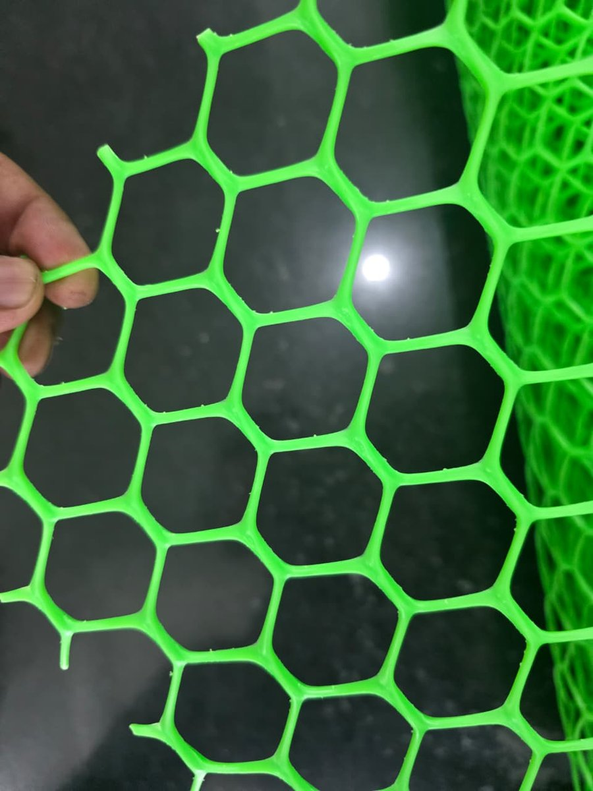
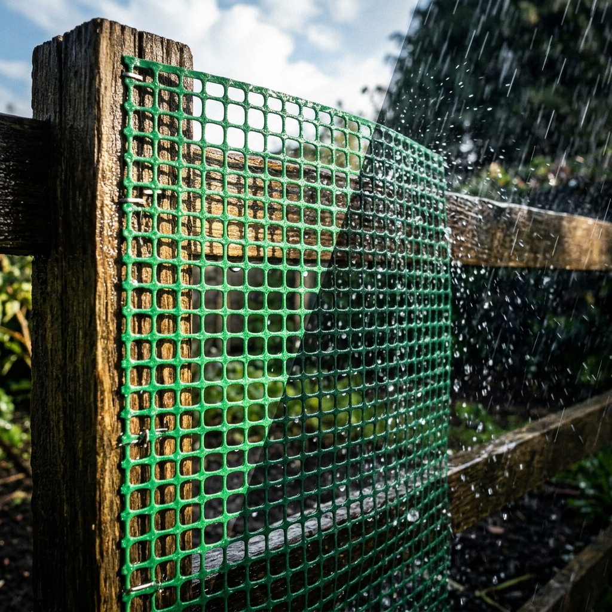
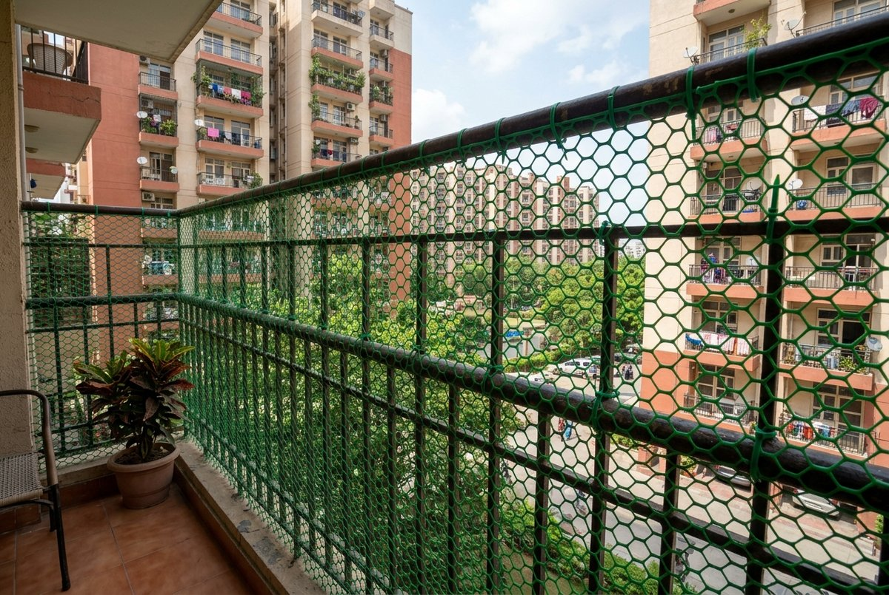
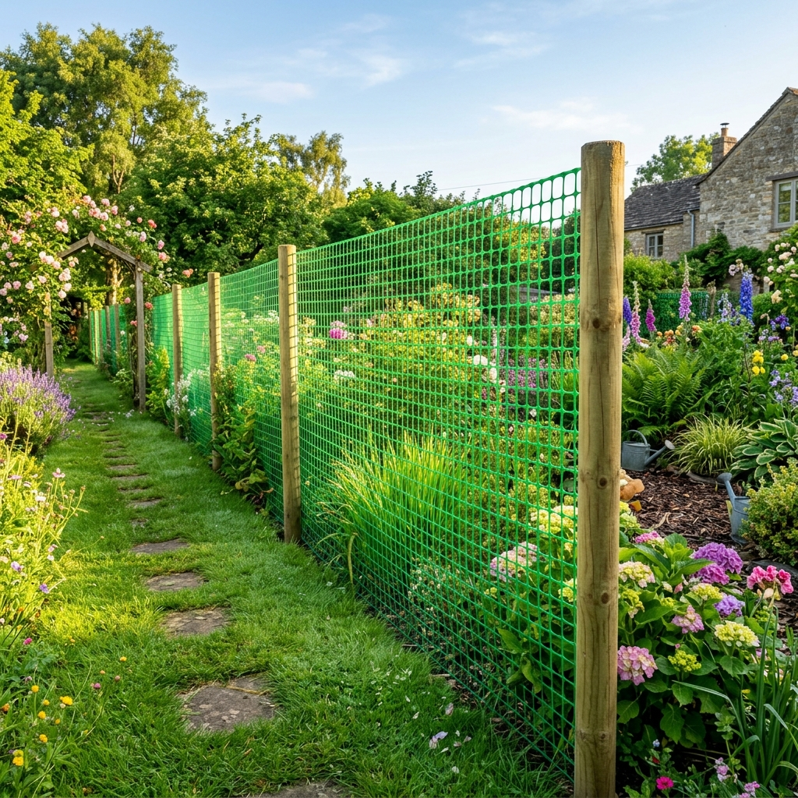
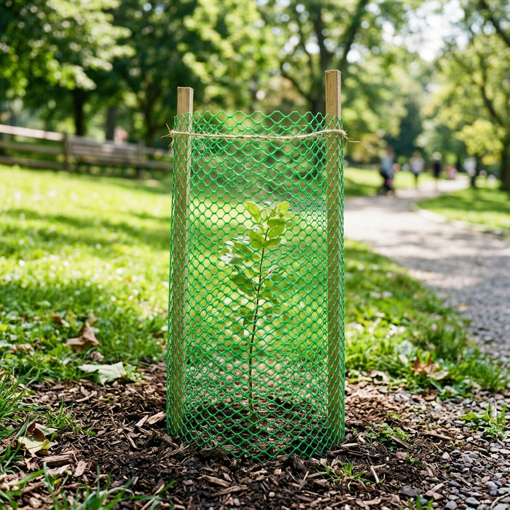
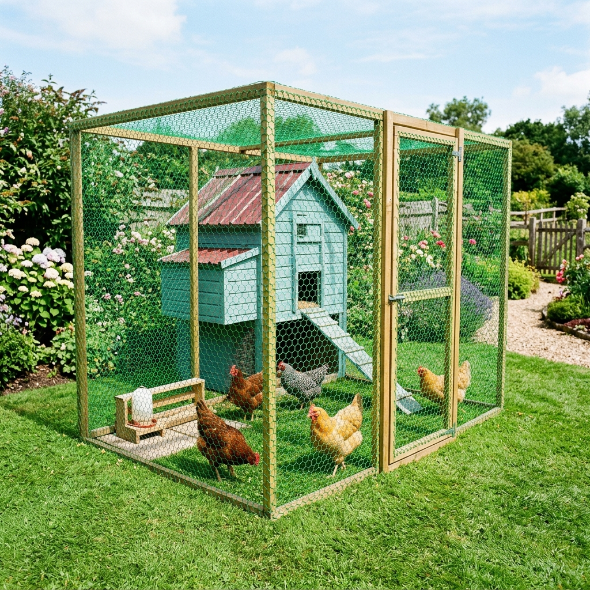
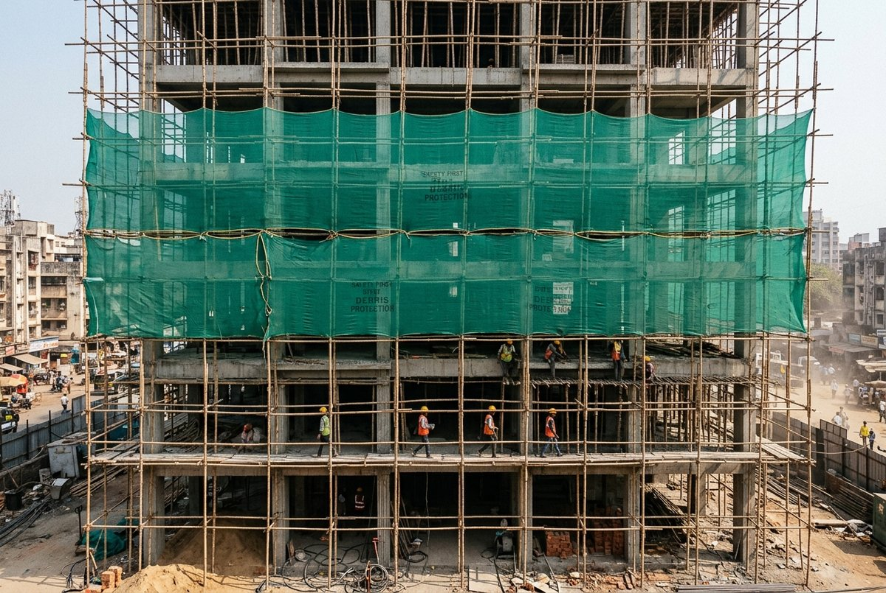
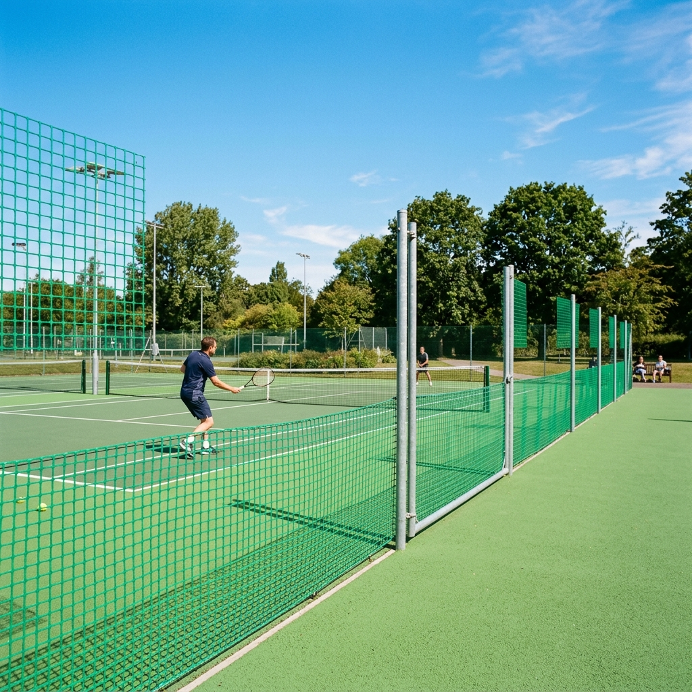
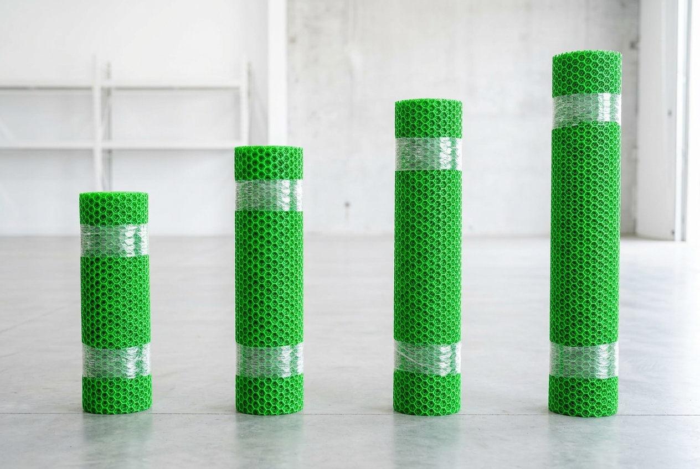
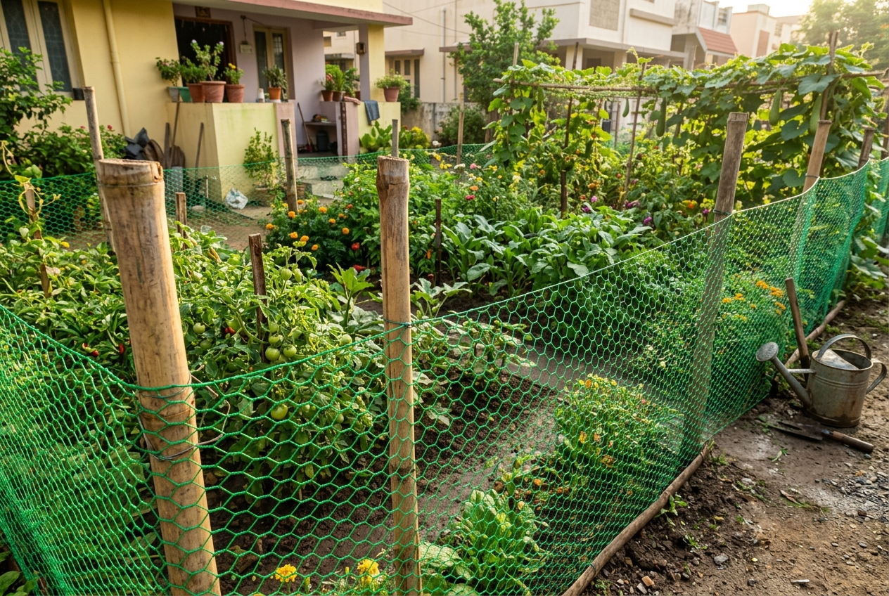

UV Stabilized & Weatherproof
Cheaper plastics crack and fade in the Indian summer. Our HDPE and PVC mesh is treated with UV inhibitors, ensuring it stays flexible, strong, and bright green for years, even in 45°C heat.
Stop paying retail markup at local hardware stores. We manufacture and supply massive quantities of green plastic jali directly to the public and contractors. Here is why our mesh is superior:
Cheaper plastics crack and fade in the Indian summer. Our HDPE and PVC mesh is treated with UV inhibitors, ensuring it stays flexible, strong, and bright green for years, even in 45°C heat.
Unlike MS or GI wire mesh, plastic jali will never rust, corrode, or rot. It is completely unaffected by water, monsoon rains, or acidic soil, making it perfect for outdoor agricultural and garden use.


This is the most versatile netting product on the market. It can be easily cut with standard household scissors and tied with zip-ties.






Because we operate out of Sector 9, Noida, we skip the middlemen. Whether you need a single 25-meter roll for your home garden, or 100 rolls for a commercial landscaping project in Gurgaon, we guarantee the best plastic jali price in the market.
When searching for a "plastic jali manufacturer near me", you need a supplier with massive stock and fast delivery. From our manufacturing hub in Sector 9, Noida, we serve the entire National Capital Region:
Noida & Greater Noida: Same-day pickup available. We are the primary supplier for nurseries and residential societies in Noida Extension, Sector 15, Sector 62, and along the Expressway.
Gurugram (Gurgaon): We dispatch bulk PVC fencing to facility managers and landscaping contractors in Cyber City, Golf Course Road, Sohna Road, and Udyog Vihar daily.
Delhi (South, North, Central): Trusted wholesale partner for local hardware stores and pest control agencies in Nehru Place, Vasant Kunj, Rohini, Pitampura, and Okhla Industrial Area.
Ghaziabad & Faridabad: Providing heavy-duty green mesh to sprawling factories, godowns, and residential colonies in Sahibabad and Faridabad industrial sectors.
The price depends on the GSM (thickness) and width of the roll. Since we are manufacturers in Noida, we offer factory-direct wholesale rates that beat retail hardware store prices. Contact us on WhatsApp for today's price list.
Yes, our PVC garden mesh is fully UV-stabilized. This prevents it from fading, cracking, or becoming brittle under the intense Delhi NCR summer sun.
It is incredibly easy to work with. You can cut the mesh to your exact required size using standard heavy-duty scissors or snips. It can be easily attached to railings, poles, or fences using nylon cable zip-ties.
Absolutely. From our warehouse in Noida Sector 9, we supply bulk orders across Noida, Greater Noida, Gurgaon, Delhi, and Ghaziabad on a daily basis.

